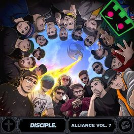

Discografica Disciple

Esta vez es Disciple Recordings, liderado por Myro y Dodge & Fuski, quién lanza un subsello para uno de los géneros dentro del dubstep que más de moda está y que cada vez vemos más entre los productores, como es el riddim. Lo cierto es que últimamente veíamos muchos lanzamientos de este estilo en Disciple, prácticamente todos se centraban en dicho género, y como el propio sello ha comentado, “era el momento de expandirse”. Este subsello estará liderado por “el padre del dubstep americano”, que ha firmado por el sello y del que hablaremos a continuación.
Además, este paso hacia una nueva etapa lo dan junto a varias nuevas y flamantes incorporaciones al sello, y es que Disciple tiene buen ojo para captar el talento. El sello incluye en sus filas a 12th Planet, el veterano productor al que podemos ver muy a menudo unido al riddim se une a Disciple para liderar Disciple Round Table y llevarlo a lo más alto de la escena dubstep y riddim mundial. Para este proyecto también contaran con productores como Answerd, Aweminus, Chibs, Definitive, Dirt Monkey, Ivory, MurDa, INFEKT, Samplifire, MONXX… No sabemos si se mantendrán de forma fija en el sello pero participarán en un primer momento.